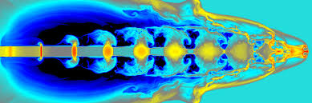

Are you interested in mathematical methods and algorithms, how they are derived, how they can be programmed and what they can be used for? In this study option these aspects as well as important features of important algorithms form, together with applications, the main focus of this study option.
The application of various algorithms involve often large datasets and revolve around estimating risk in large projects, extract useful information from different data sets, find optimal strategies or represent the data sets in a compact and appropriate way.
This may include the formulation of mathematical models, construction of numerical algorithms, software development, visualization and graphics as well as proprer assessments of the quality of the obtained results.
This is new program at the University of Oslo and through various activities, spanning from common meetings and field trips to various social gatherings, we will gradually build up a top learning environment where you will thrive as a student and learn to develop your scientific creativity. The University of Oslo offers a rich and active student environment with more than 200 student led activities and organizations.
All study options offer possibilities for stays abroad. Planning a semester or more abroad or performing parts of your thesis at a collaborating institution is something we highly recommend. As a student in this program you have a number of interesting international exchange possibilities. The involved researchers have extensive collaborations with other researchers worldwide. These exchange possibilities range from top universities in the USA, Asia and Europe as well as leading National Laboratories in the USA. Don't hesitate to get in touch with the contact person of your study option in case you plan to spend some time abroad. Studies at other institutions can be planned from the very first semester of this Master of Science program.
Students at the University of Oslo may choose to take parts of their degrees at a university abroad. The University of Oslo has exchange agreements with other universities in different parts of the world. The MN Faculty has additional exchange agreements with many universities abroad.
A significant aspect of this program is the ability to offer new educational opportunities that are aligned with the needs of a 21st century workforce. Many companies are seeking individuals who have knowledge of both a specific discipline and computational modeling. And candidates who are capable of modeling and understanding complicated systems in natural science, are in short supply in society. The computational methods and approaches to scientific problems that you will learn when working on your thesis project are very similar to the methods you will use in later stages of your career. To handle large numerical projects demands structured thinking and good analytical skills and a thorough understanding of the problems to be solved. This knowledge makes you unique on the labor market.
Career opportunities are many, from research institutes, universities and university colleges and a multitude of companies. The program gives an excellent background for further studies, with a PhD as one possible goal.
The program has also a strong international element which allows students to gain important experience from international collaborations in science, with the opportunity to spend parts of the time spent on thesis work at research institutions abroad.